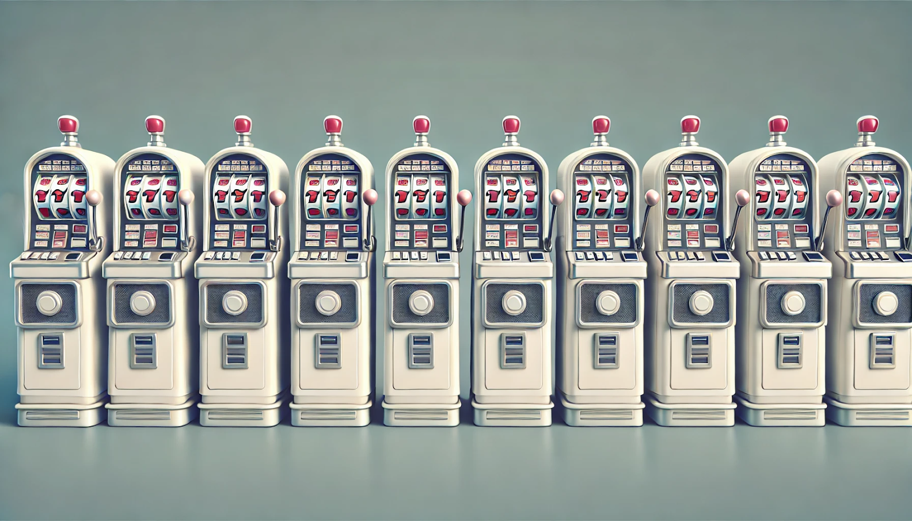

#2: Other Games | Reading
Types of Games
This course is primarily about poker and poker-adjacent games, but let’s take a step back and look at different classes of games and where poker fits.
The goal of this reading is to introduce various concepts that will be useful when building agents for future challenges.
Reinforcement Learning (RL)
Many ideas in this section on RL come from Sutton and Barto’s Reinforcement Learning book.
The main idea of reinforcement learning is that an agent learns by taking actions in its environment. The environment then gives feedback in the form of rewards and a new state.
We have for each time \(t\): - State: \(S_t\) - Action: \(A_t\) - Reward: \(R_t\)
The goal of an agent is generally to maximize the expected value of the rewards received.
Reward values can be designed in a way to optimally train the agent. In chess for example, we could give a reward of \(+1\) for winning a game, \(-1\) for losing, and \(0\) for all other states including draws. Defining intermediate rewards for actions like taking an opponent piece risks the agent prioritizing that goal over winning the game.
Reward hacking is when agents find a way to obtain rewards in a way that isn’t aligned with the intended goal. (The agents will take the reward structure very literally and this is all they have to go on!)
A Markov Decision Process (MDP) is a simplified model of the reinforcement learning problem in that the probability of future states and rewards depends only on the previous state and actions.
This can be written as:
\[ p(s', r \mid s, a) = \Pr\{S_t=s', R_t=r \mid S_{t-1}=s, A_{t-1}=a\} \]
Value functions estimate the value of being in a certain state in terms of expected future rewards (which can be discounted).
If you’re about to flip a coin and want it to be heads (\(+1\)) and not tails (\(-1\)), then the value of that state is \(0\).
If you’re in a chess game where winning is \(+1\) and losing is \(-1\) and everything else is \(0\) and you’re in a state where it’s your turn and you can checkmate, then that state has a value of \(+1\).
A policy is a mapping from states to probabilties of selecting each action and is written as \(\pi(a\mid s)\).
Simple MDP example, like buy carrots not anything else
Policy, value function, optimal policy, optimal value function
War
If you thought that Kuhn Poker was a simple card game, meet War.
There are two players, each gets half the deck, 26 cards. Each player turns over their top card and faces it against the opponent’s top card. The better card wins, with Aces high. This repeats until one player has all the cards.
When the cards match, the players go to “War”. When this happens, put the next card face down, and then the card after that face up, and then these up-cards face off against each other. The winner takes all six cards. If there’s another tie, then repeat and the winner takes 10 cards, etc.
You can see a Dreidel game simulator written by Ben Blatt in Slate from 2014 at this link.
Tictactoe
Evolutionary algorithms for poker and tic-tac-toe
Exercise: Look at this game tree with payouts at the bottom written in terms of Player 1. Start from the bottom of the tree and figure out the actions of each player at each node. Then figure out the value of the game for Player 1 and for Player 2. This procedure is called backpropagation.
Question: Why can’t we use this procedure in Kuhn Poker and imperfect info games? Tree imperfect info vs perfect info issues, show trees Compare this to the Wabbits game and problem from paper
Minimax
https://www.neverstopbuilding.com/blog/minimax
Value Function
Minimax assumes opponent playing best plays too temporal-difference
RL: Planning and Learning
RL: Monte Carlo Tree Search
https://starai.cs.ucla.edu/papers/VdBBNAIC09.pdf What about just using imperfect info version of MCTS?
Multi-Armed Bandits

Bandits are a set of problems with repeated decisions and a fixed number of actions possible coming from a single state.
The agent updates its strategy based on what it learns from the feedback from the environment. You could think of this in real-world settings like picking which dish to eat at a restaurant.
Consider a 10-armed bandit setup like in the image below:
Each time the player pulls an arm, they get some reward, which could be positive or negative.
A basic setting initializes each of 10 arms with \(q*(\text{arm}) = \mathcal{N}(0,1)\) so each is initialized with a center point around a Gaussian distribution. Each pull of an arm returns a reward of \(R = \mathcal{N}(q*(\text{arm}_i), 1)\).
In other words, each arm is initialized with a value centered around \(0\) but with some variance, so each will be a bit different. Then from that point, the actual pull of an arm is centered around that new point with some variance as seen in this figure above.
The agent can sample actions and estimate their values based on experience and then use some algorithm for deciding which action to use next to maximize rewards. The estimated value of action \(a\) at timestep \(t\) is defined as \(Q_t(a)\).
The agent is then faced with two competing goals:
- Get as accurate an estimate \(Q_t(a)\) as possible
- Select actions with the highest rewards as much as possible
Exploring refers to figuring out the values of the arms, or in the case of a restaurant, figuring out how good each dish is.
Exploiting refers to using current knowledge to choose the highest value estimated action.
\(Q_t(a)\) can simply be estimated by averaging the rewards received each time a specific arm has been tried. The so-called greedy action rule is to then take the largest \(Q_t(a)\) action, \(A_t = \argmax_{a} Q_t(a)\)
Regret
How would you define regret in this bandit setting? How is minimizing regret related to maximizing reward? explore exploit
RL: Action-Value Methods
Hidden imperfect info, understand in distribution over possible states of the world Depending on state will want to make decisions differently Bayesian explore exploit optimizer What is my opponent range exercise in Bayesian update Explore vs. exploit Bayesian updating https://aipokertutorial.com/game-theory-foundation/#regret https://www.reddit.com/r/statistics/comments/1949met/how_are_multi_armed_bandits_related_to_bayesian/ https://tor-lattimore.com/downloads/book/book.pdf https://lcalem.github.io/blog/2018/09/22/sutton-chap02-bandits#26-optimistic-initial-values
But you could use the MCTS that does work by changing the game setup
Blackjack
Setup Solving
RL: Dynamic Programming
My blog post
RL: Monte Carlo Methods
Gridworld
pg 60
RL: Q-Learning
Poker Games
Why are we mostly interested in poker games? We think that
imperfect adversarial widely played well researched, but only nash equilibrium